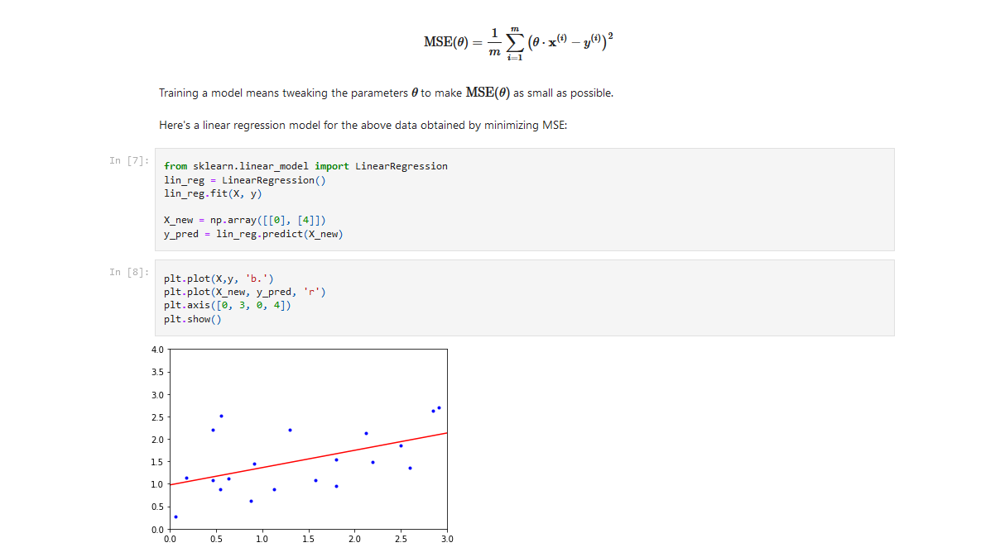

DAT158: Machine Learning Engineering and Advanced Algorithms
Module 1 - Introduction to Machine Learning
Programming
The machine learning part of the course is based on the python programming language
Free resources for learning python are posted on Canvas, such as
Two options for running python:
- Use cloud services, such as
- Install locally

Notebooks
Exercises are given in form of Jupyter notebooks
- Can mix code, results, and notes (
markdownandTeX) in the same file - These are partially filled, and you fill the rest
- Can be run locally or in cloud services



Python libraries

numpy provides fast manipulation of large arrays and matrices

scikit-learn has a big selection of machine learning models and functions for data processing and evaluation
numpy arrays
Operations on arrays are typically done element-by-element.
>>> a = np.array([1,2,3])
>>> np.power(a, 2)
array([1, 4, 9])>>> b = np.array([4,5,6])
>>> a * b
array([ 4, 10, 18])In cases the shapes of two arrays don’t match, numpy will try to make them match
(aka broadcasting):